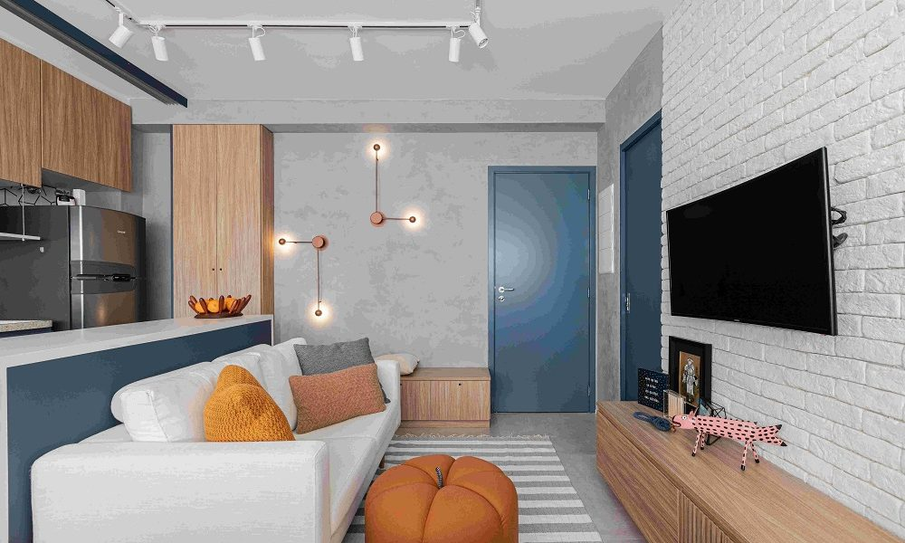
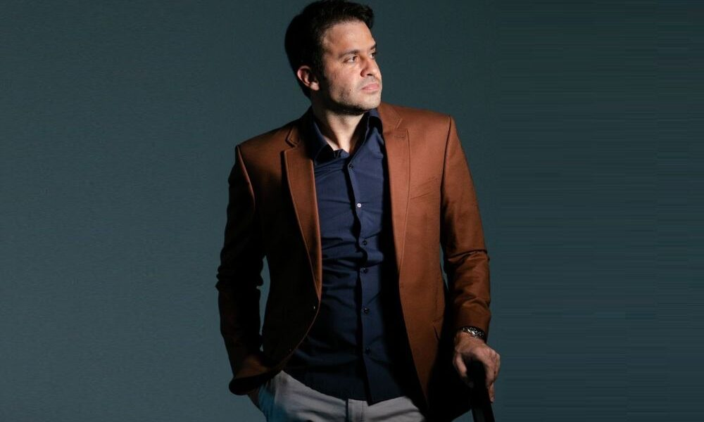

Daqui a um ano eu me imagino estagiando ou já sendo um desenvolvedor/programador Jr, até lá, já vou estar aprendendo a programar bem, colocando em prática as coisas que estudei e que estarei aprendendo com as pessoas a minha volta. Até aqui a tragetória tem sido: até onde eu quero e posso ir? Também estarei formado na faculdade.
A cinco anos eu me imagino com experiência na área, e nisso quero ajudar as pessoas que pensam em entrar neste ramo e não sabem por onde começar como um dia eu estive. E quem sabe até lá o cargo que eu vou estar? Talvez um desenvolvedor/programador pleno? Espero que sim! Quero também já ter a minha casa e carro consquistados pelo meu trabalho. Continuarei me esforçando mais e mais para avançar na minha carreira profissional.
E daqui a dez anos eu nem consigo nem imaginar aonde eu estaria com o esforço do meu trabalho. Talvez ainda trabalhando na NBA? Mas sei que estaria bem longe, e quem sabe, sendo uma referência nesse ramo para pessoas do mundo todo. Sempre continuando, estudando e facilitando os usuários de tecnologia.
Quem sabe tudo isso aí que eu escrevi eu viva antes desses anos?
 